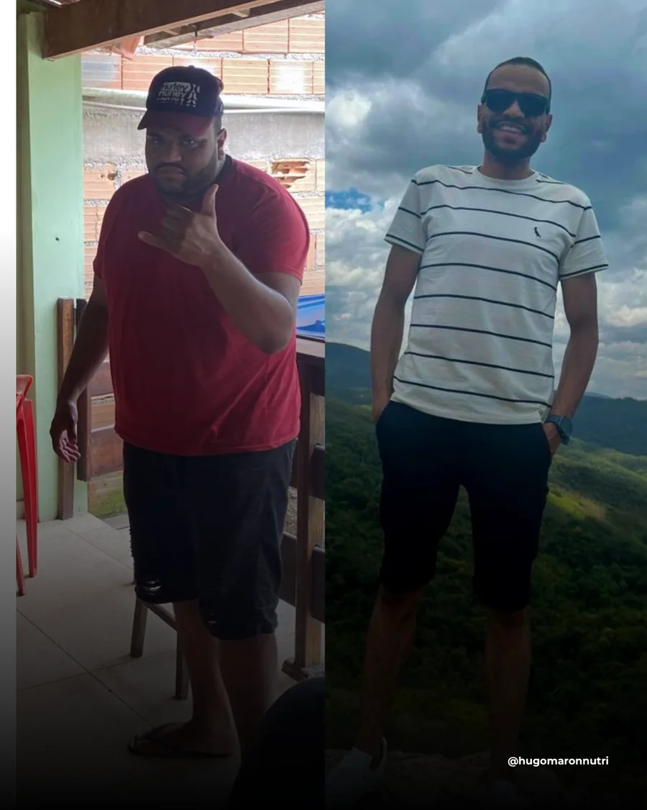
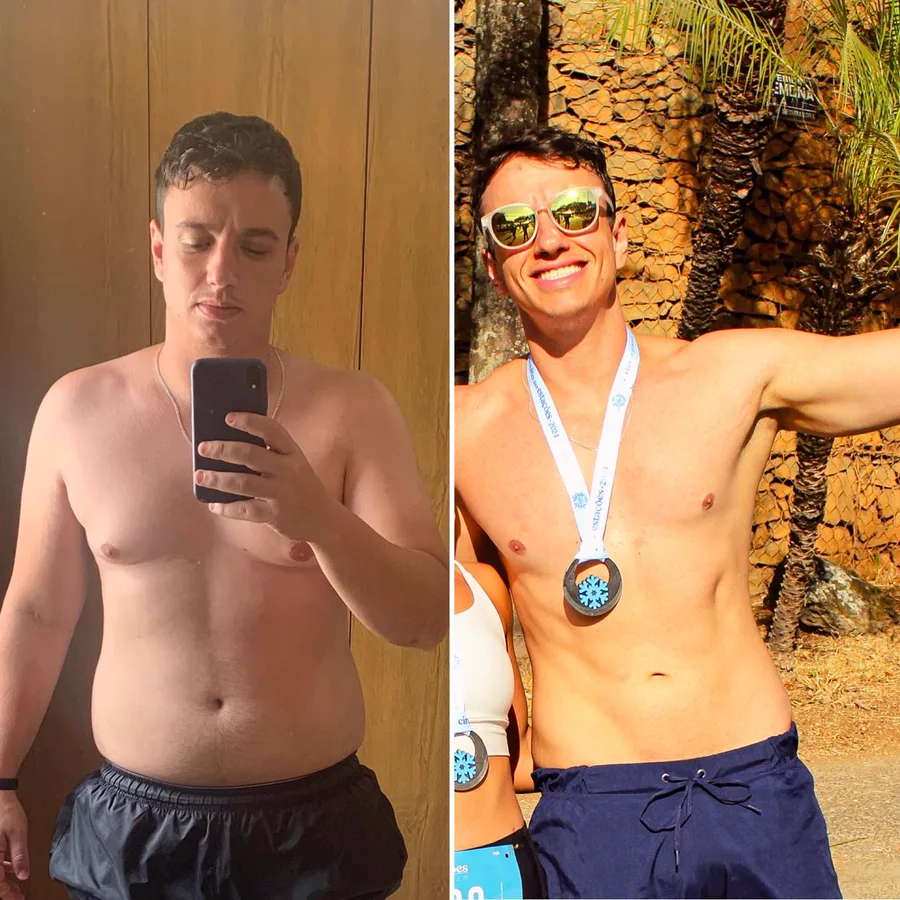
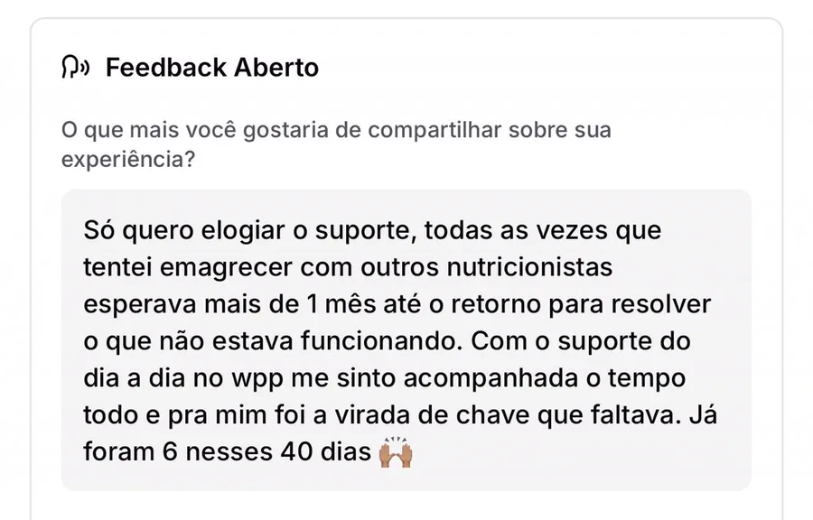
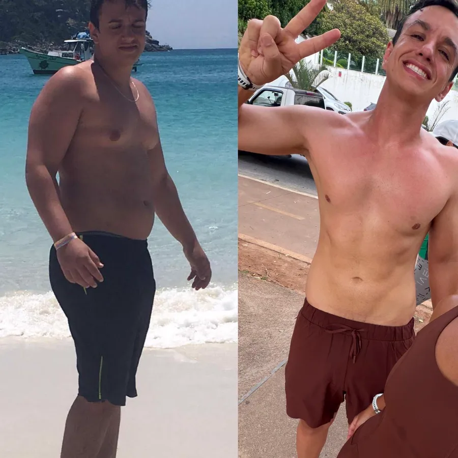
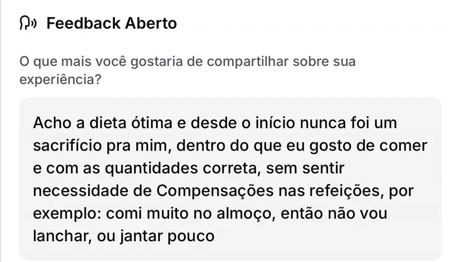
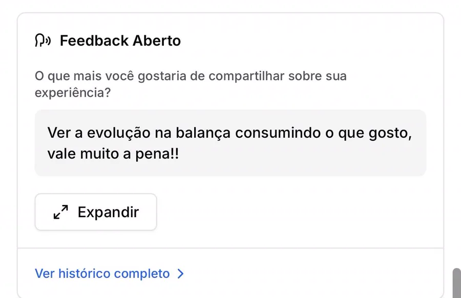

Experiência prática
Atendimentos nutricionais realizados desde 2023, ainda durante a formação acadêmica.
Sem fórmulas prontas: a estratégia nutricional é pensada a partir da sua realidade, dos seus horários, das suas preferências e dos seus objetivos.
Quero começar minha transformaçãoHugo Maron Nutricionista · CRN-9 37282
Hugo Mol Maron — Nutricionista
Meu nome é Hugo Maron, sou nutricionista e pós-graduado em Nutrição Esportiva, mas minha trajetória começou longe da nutrição.
Minha primeira formação foi em Engenharia de Produção. Depois de enfrentar o efeito sanfona diversas vezes, chegar a pesar mais de 100 kg e finalmente conseguir perder 30 kg, descobri que mudar o corpo não precisava significar viver em restrição.
Essa experiência despertou minha paixão pela nutrição e me levou a buscar uma segunda formação, na qual me formei como melhor aluno da minha turma.
Hoje, ajudo pessoas a emagrecer, ganhar massa muscular e melhorar sua composição corporal, sempre com uma filosofia: a alimentação precisa se adaptar à sua vida, e não o contrário.






Atendimentos nutricionais realizados desde 2023, ainda durante a formação acadêmica.
Graduação em Nutrição e pós-graduação em Nutrição Esportiva.
Abordagem voltada à realidade, às preferências e ao dia a dia de cada pessoa.
Cuidado com saúde, emagrecimento e performance de forma equilibrada.
Programas
O MaronFit é o projeto do nutricionista Hugo Mol Maron que reúne estratégias de nutrição voltadas para o emagrecimento, a saúde e a performance, valorizando a individualidade e a construção de hábitos sustentáveis.
Hugo Mol Maron é nutricionista, formado em Nutrição em 2025 e pós-graduado em Nutrição Esportiva em 2026. Realiza atendimentos desde 2023, quando começou no consultório da faculdade, e participou da transformação de centenas de vidas ao longo da sua trajetória.
Sim. O emagrecimento é um dos focos do MaronFit, sempre com estratégias alimentares compatíveis com a rotina e os objetivos de cada pessoa. A conduta é definida de forma individual, após a avaliação nutricional.
Sim. Com pós-graduação em Nutrição Esportiva, Hugo direciona a estratégia nutricional para apoiar a prática de atividades físicas e a evolução de performance.
As informações sobre formatos de atendimento, etapas de acompanhamento e valores são apresentadas diretamente pelo Hugo no primeiro contato. Envie uma mensagem pelo WhatsApp para receber todos os detalhes.
É simples: entre em contato pelo WhatsApp, conte quais são seus objetivos e receba as orientações sobre os próximos passos para iniciar sua jornada.
Você pode falar com o Hugo por qualquer um destes canais: